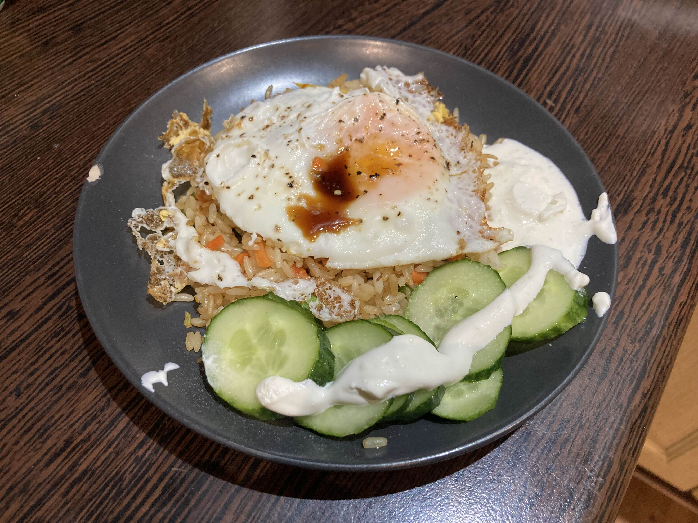

Leidsin selle retsepti Instagrammi reelse kerides (nagu ikka). See on väidetavalt vaese aasia tudengi go to eine, kui külmkapis varitseb tühjus. Eestlastel väga tihti riisi niisama üle ei jää, aga öeldakse, et kõige parem praetud riis tuleb siis, kui seda tehakse just eelmise päeva riisi ülejääkidest. Proovisin järgi ja kuigi riisi jääkidest tehtud söök oli üllatavalt hea, siis värskelt keedetud riisiga oli ka väga söödav :D

Koostisosad:
- riisi jäägid (näiteks eelmine päeva õhtusöögist)
- külmutatud juurvilju
- sojakaste
- muna
Valmistamine:
Soojenda pannil külmutatud juurviljad, lisa pisut soola ja siis lisa riis. Lase riisil natukene pruunistuda ja sega läbi.
Lisa umbes supilusikas sojakastet ja omal vabal valikuid maitseaineid (soola ei pea lisama, sest sojakaste on juba piisavalt soolane).
Tõsta praetud riisisegu kaussi. Nüüd prae sama panni peal üks muna soola ja pipraga ja tõsta see riisi peale. Soovi korral võid veel muna peale tilga sojakastet lisada. Tehtud!
Mulle meeldib munakollase praadides vedelaks jätta, et hiljem riisiga kokku segada. Kui tunned, et tahaksid rohkem valku oma sööki, siis võid enne juurvilju näiteks hakkliha praadida.
Samuti, kui külmkapis on juhuslikult olemas, võid natuke hapukoort ja kirsstomateid/kurgiviile kõrvale panna.